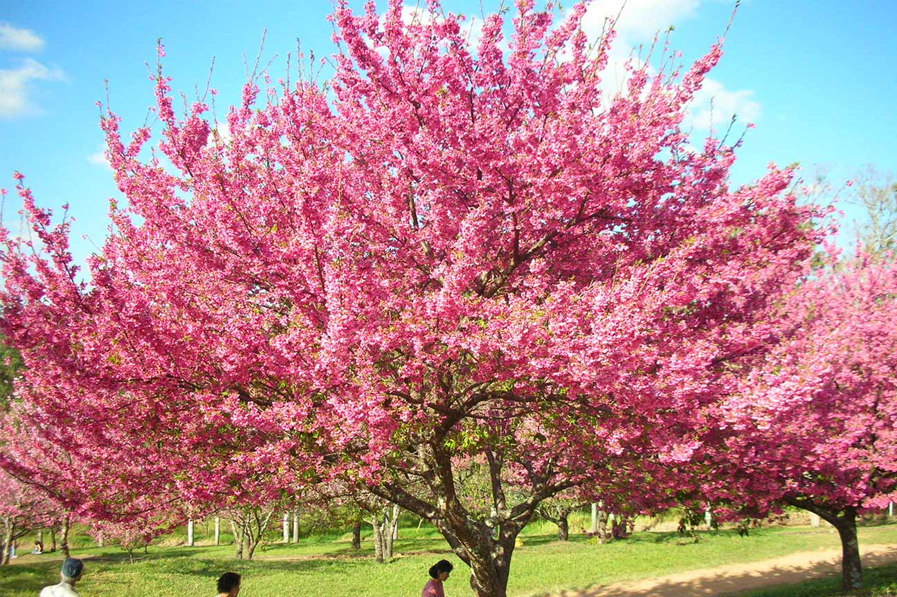
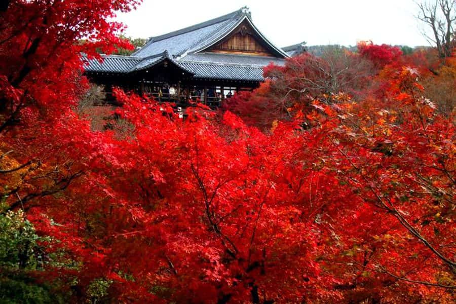
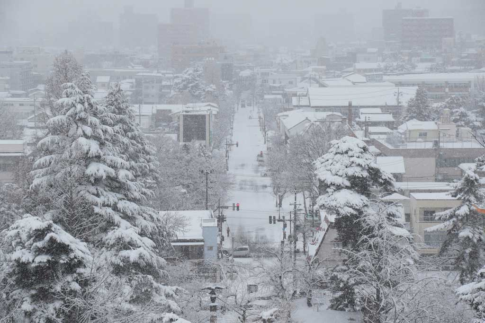
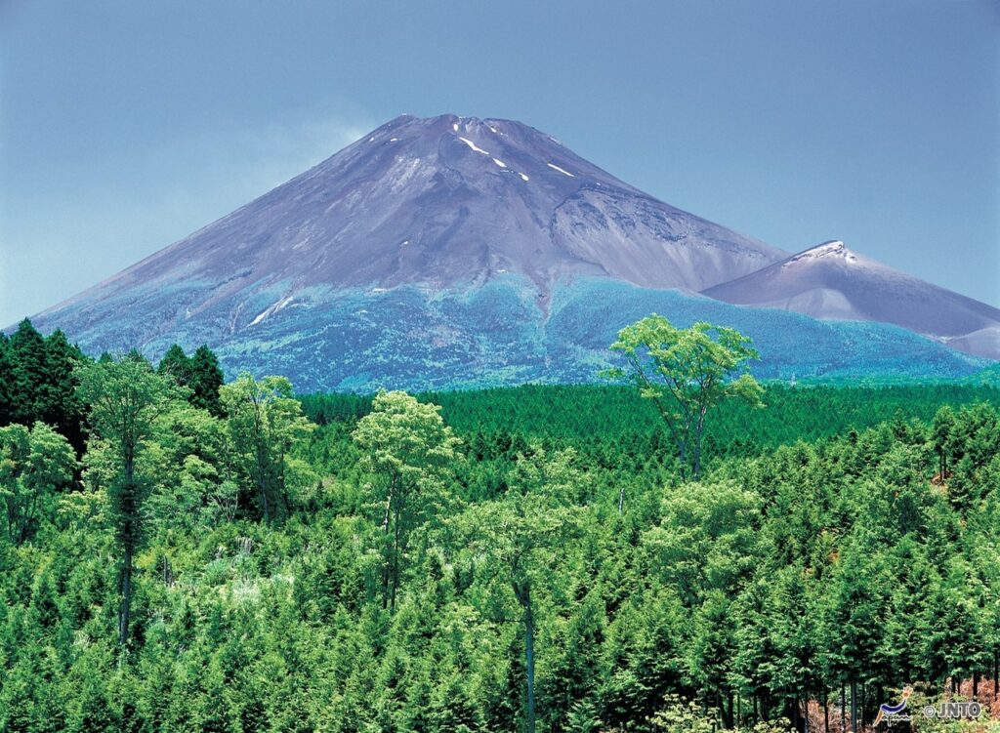
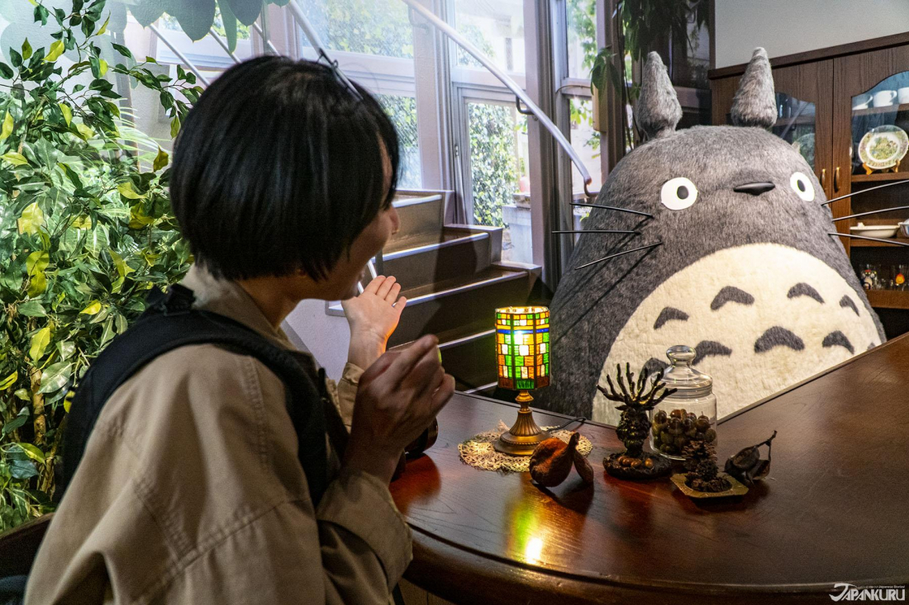
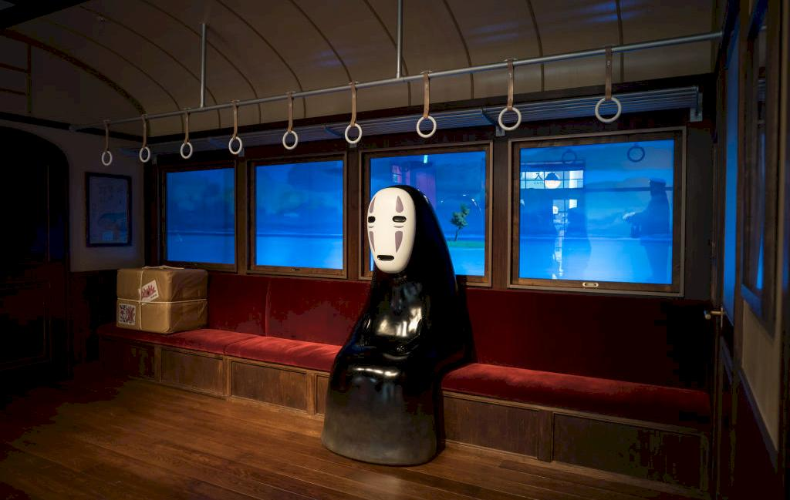
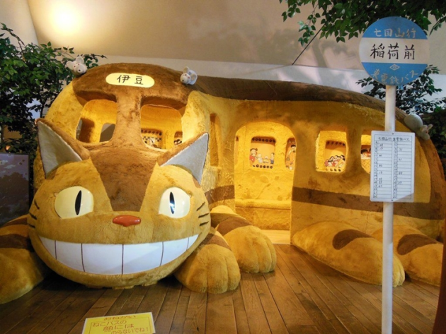
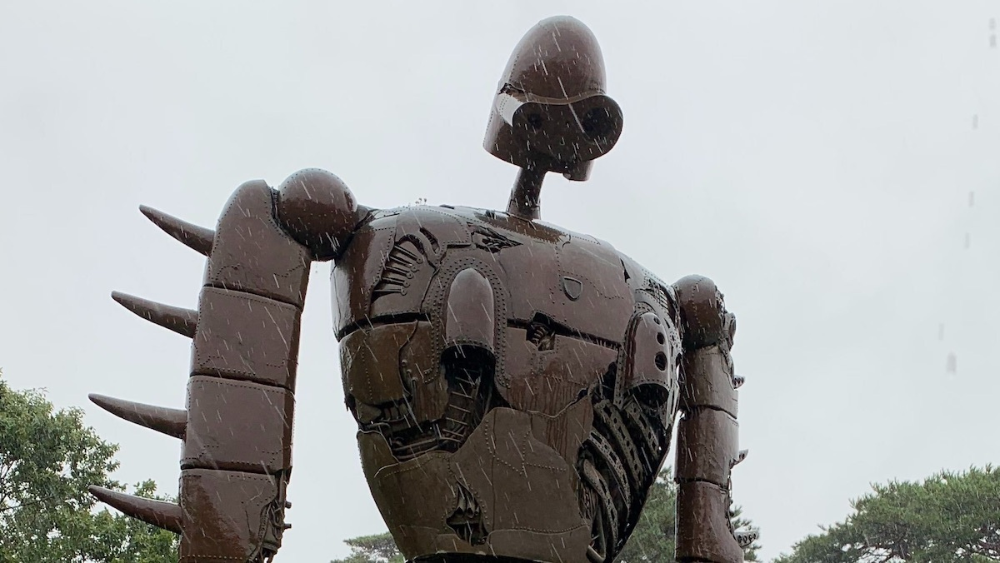

Japan

Japan |
|
Home | História | Curiosidades |
|---|
Festivais em estações |
|
|
O Japão é um país que você pode visitar o ano todo, porém, na Primavera (que vai de março a maio), você pode presenciar o incrível festival de cores que as lindas flores de cerejeiras criam, o Sakura Matsuri. |
 |
|  |
O outono têm temperaturas amenas e agradáveis e os jardins e bosques são tomados por tons de sépia. |
|
Se você gosta de esquiar, o inverno no Japão foi feito para você. E caso você queira uma pausa da neve, você pode aproveitar as águas termais dos spas. |
 |
|  |
Aproximadamente 80% do Japão são formados por cadeias montanhosas e planaltos. Isso se deve ao fato de o arquipélago estar situado em uma área de contato entre diversas placas tectônicas em que predominam as forças orogenéticas, que causam o soerguimento da crosta. A elevação média no país é de 438 metros. Seu ponto mais elevado é o monte Fuji, a 3776 metros acima do nível do mar |
Museu do Studio Ghibli em Mitaka |
|
O museu do Ghibli, é um espaço um incrível para homenagear as obras de arte do Hayao Miyazaki-san! Nesse espaço (ou melhor, santuário), você pode interagir com as exposições, até mesmo assistir curtas exclusivos do Studio Ghibli, feitos especialmente para o Museu. |
|
O museu do Ghibli fica do lado de um parque, e logo na entrada, você encontra um Totoro Gigante (criatura mágica que representa os espirítos e energia da floresta). |
 |
|
É um lugar super fotogênico, e aproveite para tirar muitas fotos do lado de fora, pois dentro do museu do Ghibli não é permitido. |
|
Cada andar do Museu traz uma exposição diferente, e é possível entender o processo de criação das animações, desde o esboço mais simples, até que os personagens ganhem vida. |
 |
|  |  |